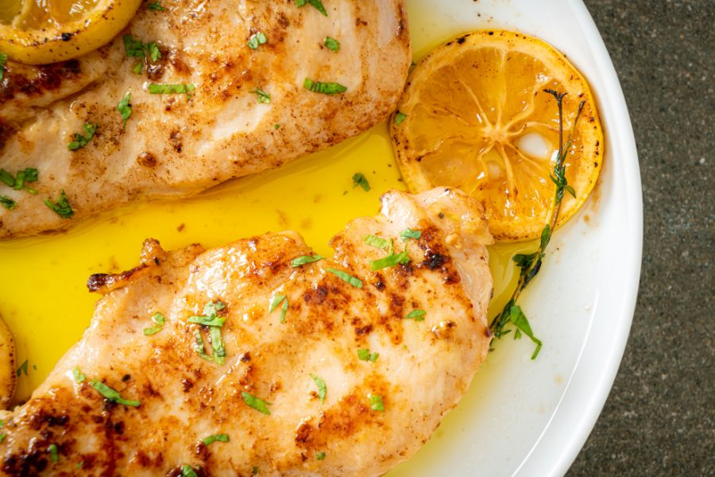
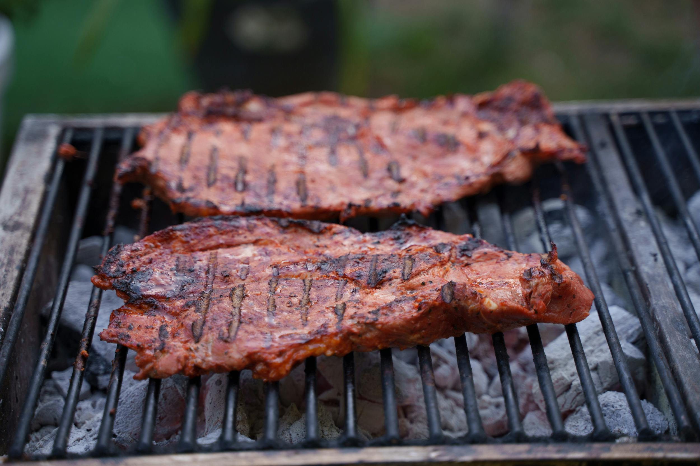
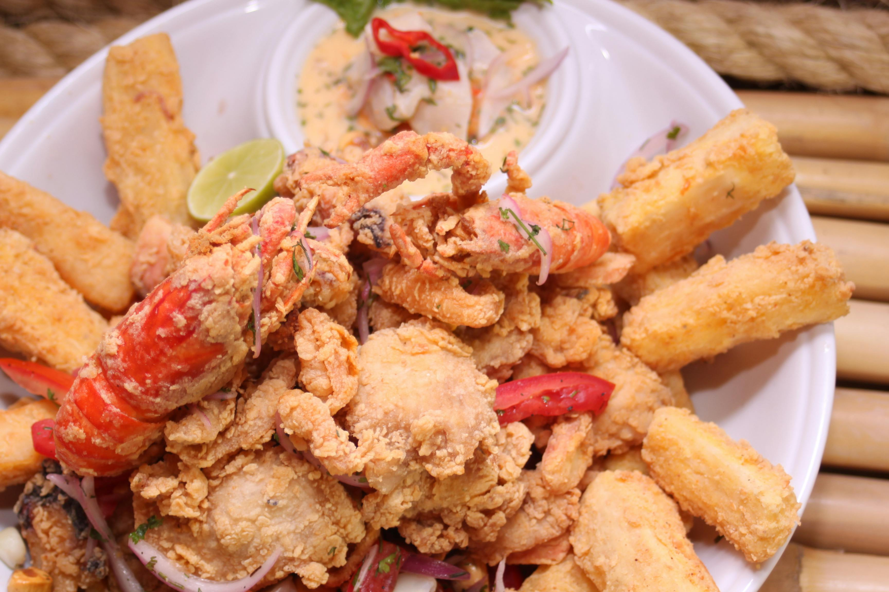
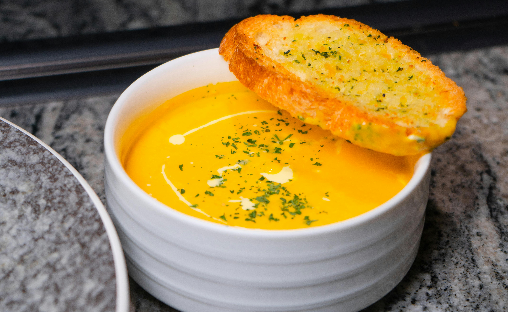
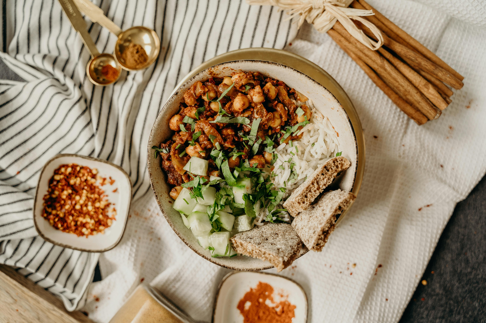

Explorar por categoria

Pollo al Limon

Carne Asada

Chuleta de Cerdo

Mariscos Mixtos

Pescado al Limon

Ensalada Vegana

Pasta con Tomate

Pastel de Frutas

Sopa de Calabaza

Ensalada Fresca

Desayuno Completo
